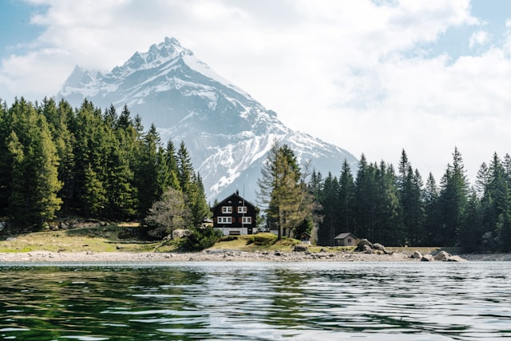

Olá! Meu nome é Felipe Araujo, tenho 29 anos e moro em Santo André, SP. Sou um profissional da área de tecnologia há mais de 10 anos e apaixonado por programação. Gosto muito de carros, séries, filmes, animes e viajar para conhecer novos lugares. Nas horas vagas, costumo estudar novas tecnologias, mexer no meu carro e, dependendo do tempo, sair para tomar um sol e relaxar.
| País | Imagem |
|---|---|
| Estados Unidos |
|
| Suíça |  |
| Japão |
Visite meu site favorito: YouTube